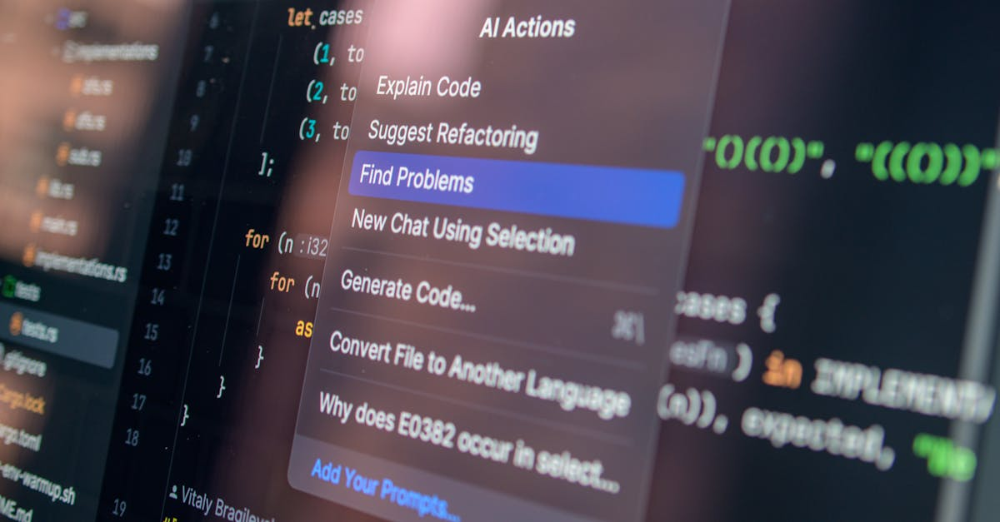

Le Géant Silencieux de l'IA Frappe à la Porte des Entreprises
L'intelligence artificielle est sans conteste le catalyseur le plus puissant de notre décennie, remodelant industries et économies à une vitesse vertigineuse. Au cœur de cette révolution, des acteurs clés émergent, chacun avec sa propre vision et sa stratégie. Parmi eux, Anthropic, souvent perçu comme le rival le plus sérieux d'OpenAI, vient d'annoncer une étape majeure : le lancement de son activité de services d'IA d'entreprise. Cette nouvelle, rapportée par Seeking Alpha, n'est pas qu'une simple diversification ; elle marque une accélération significative dans la course à la domination du marché de l'IA professionnelle, avec des répercussions profondes pour les investisseurs et le paysage technologique global.
👉 À lire : Data Centers : Où vont-ils s'installer en 2026 ?
Jusqu'à présent, Anthropic s'était principalement distingué par son approche « sécuritaire » de l'IA, avec des modèles comme Claude conçus pour être moins enclins aux biais et aux hallucinations, grâce à ce qu'ils appellent l'« IA constitutionnelle ». Cette philosophie a séduit de nombreux partenaires et investisseurs, mais le passage à une offre de services B2B ouvre un tout nouveau chapitre. Pourquoi maintenant ? La demande pour des solutions d'IA personnalisées, intégrées et robustes n'a jamais été aussi forte. Les entreprises de toutes tailles chercheent désespérément à automatiser, optimiser et innover, et les grands modèles de langage (LLM) sont au cœur de cette transformation. Cette incursion d'Anthropic dans le monde de l'entreprise n'est donc pas une surprise, mais plutôt une réponse stratégique à un marché en pleine effervescence.
👉 À lire : Inde : Plus qu'un Leader, un Défi Géopolitique et Financier
Pour les acteurs du marché boursier, cette annonce est un signal fort. Elle indique une maturité croissante du secteur de l'IA, où les promesses théoriques cèdent la place à des applications concrètes et génératrices de revenus. Les investisseurs scrutent attentivement la capacité des entreprises d'IA à monétiser leurs innovations, et Anthropic, avec ses soutiens financiers colossaux (notamment Google et Amazon), se positionne désormais comme un concurrent direct sur un front crucial. Cela pourrait bien redéfinir les valorisations et les stratégies d'investissement dans l'ensemble de l'écosystème technologique. L'ère de l'expérimentation pure est derrière nous ; celle de l'industrialisation de l'IA est bel et bien lancée, avec Anthropic en première ligne.

Anthropic : Une Approche Unique Face aux Géants Établis
Dans le paysage hyper-compétitif de l'intelligence artificielle, Anthropic a toujours cultivé une identité distincte. Tandis qu'OpenAI captivait le grand public avec ChatGPT et Microsoft capitalisait sur cette popularité, Anthropic a choisi une voie plus discrète, axée sur la recherche et la sécurité. Son modèle phare, Claude, est loué pour sa capacité à générer des textes plus cohérents et moins sujets aux « hallucinations », un atout majeur pour les applications d'entreprise où la fiabilité est primordiale. Cette approche, baptisée « IA constitutionnelle », vise à aligner l'IA sur des principes éthiques et des objectifs humains, minimisant ainsi les risques.
L'entrée d'Anthropic sur le marché des services d'entreprise n'est pas une simple réplication de l'offre de ses concurrents. Elle s'appuie sur cette fondation de confiance et de robustesse. Les entreprises, en particulier celles opérant dans des secteurs réglementés comme la finance, la santé ou le juridique, sont extrêmement sensibles aux risques liés à la désinformation ou aux biais algorithmiques. Anthropic offre une proposition de valeur unique : une IA puissante, certes, mais aussi plus sûre et plus transparente. Comme l'a souligné un analyste fictif de Wall Street, « Dans un monde où la réputation est tout, la promesse d'une IA 'constitutionnelle' d'Anthropic pourrait bien être le facteur décisif pour de nombreuses multinationales hésitantes à franchir le pas de l'intégration profonde de l'IA. »
Cette stratégie de différenciation est cruciale pour Anthropic, car le marché est déjà saturé de solutions proposées par des géants comme Google (avec Gemini), Microsoft (avec Azure AI et OpenAI), et Amazon (avec Bedrock). En se concentrant sur la fiabilité et la sécurité, Anthropic ne cherche pas seulement à rivaliser, mais à créer une nouvelle niche, ou du moins à dominer celle qui valorise le plus ces attributs. Pour les investisseurs, cela signifie observer non seulement la part de marché qu'Anthropic réussira à capter, mais aussi la manière dont sa proposition unique influencera les standards de l'industrie. Le succès de cette stratégie pourrait avoir des implications significatives sur la valorisation des entreprises d'IA et sur la manière dont les marchés perçoivent la valeur réelle de l'innovation dans ce domaine.
La Ruée vers l'Or de l'IA d'Entreprise : Un Marché en Pleine Ébullition
Le marché des services d'IA d'entreprise représente un véritable eldorado, estimé à plusieurs centaines de milliards de dollars et affichant une croissance exponentielle. Chaque grande entreprise, de la banque d'investissement aux conglomérats industriels, cherche à exploiter le potentiel de l'IA pour tout, de l'optimisation des chaînes d'approvisionnement à la personnalisation de l'expérience client. C'est dans ce contexte de demande insatiable qu'Anthropic fait son entrée, non pas comme un outsider, mais comme un challenger de poids, armé de sa technologie avancée et de sa réputation de fiabilité.
La concurrence est féroce. Google, avec sa suite Gemini et ses services Cloud AI, propose déjà une gamme étendue de solutions. Microsoft, via son partenariat stratégique avec OpenAI, offre des capacités LLM intégrées dans ses produits d'entreprise, transformant la productivité de millions d'utilisateurs. Amazon Web Services (AWS) déploie Bedrock, une plateforme permettant aux entreprises de construire et d'adapter des modèles d'IA. Face à ces mastodontes, Anthropic doit non seulement prouver la supériorité technique de Claude, mais aussi sa capacité à s'intégrer harmonieusement dans les infrastructures existantes des clients et à offrir un support de qualité.
L'enjeu pour Anthropic est de taille : il s'agit de transformer sa recherche de pointe en solutions commerciales viables et rentables. Cela implique de développer des API robustes, des outils de déploiement faciles à utiliser et une expertise sectorielle approfondie. Un dirigeant d'une grande société de conseil en technologie, sous couvert d'anonymat, nous confiait récemment : « Les entreprises ne veulent pas juste un modèle, elles veulent une solution clé en main qui résout un problème métier spécifique. La bataille se jouera sur l'intégration, la personnalisation et la capacité à démontrer un ROI clair. » Pour les investisseurs, cette phase de monétisation est cruciale. Les évaluations des entreprises d'IA reposent souvent sur des projections de croissance futures, et la capacité d'Anthropic à convertir son potentiel technologique en revenus concrets sera un indicateur clé de sa viabilité à long terme et de sa valeur boursière potentielle, même si elle n'est pas encore cotée en bourse.

Impact Sectoriel : De la Finance à la Santé, l'IA Redéfinit les Règles
L'arrivée d'Anthropic sur le marché des services d'IA d'entreprise promet de remodeler de nombreux secteurs, avec des implications particulièrement fortes pour les industries gourmandes en données et en analyse. La finance, la santé, le droit et le service client sont en première ligne de cette transformation. Dans le secteur financier, par exemple, l'IA constitutionnelle de Claude pourrait offrir une nouvelle dimension de confiance pour l'analyse de données sensibles, la détection de fraudes ou la personnalisation des conseils d'investissement. Imaginez des systèmes capables de traiter des millions de transactions par seconde, d'identifier des anomalies avec une précision inégalée, tout en respectant des directives éthiques strictes.
Pour les gestionnaires de fonds et les traders, l'intégration de modèles d'IA avancés comme ceux d'Anthropic pourrait révolutionner la prise de décision.
- L'analyse prédictive des marchés boursiers, des ETF et des indices pourrait atteindre des niveaux de sophistication inédits.
- La modélisation des risques deviendrait plus dynamique et nuancée.
- La détection de signaux faibles dans des volumes massifs de nouvelles financières et de rapports d'entreprise serait considérablement améliorée.
Au-delà de la finance, la santé verrait des avancées majeures dans la recherche pharmaceutique, le diagnostic assisté et la gestion des dossiers patients. Le secteur juridique pourrait bénéficier d'une automatisation accrue de la recherche documentaire et de la rédaction de contrats, tandis que le service client serait transformé par des chatbots intelligents et empathiques. Chaque secteur, avec ses défis spécifiques, trouvera dans les offres d'Anthropic des leviers de performance. Pour les investisseurs, il est crucial d'identifier les entreprises qui sauront le mieux intégrer ces nouvelles capacités d'IA. Les sociétés qui adopteront tôt et efficacement ces technologies pourraient voir leur productivité et leur rentabilité s'envoler, offrant des opportunités d'investissement significatives sur les marchés des actions et des ETF sectoriels.
Répercussions sur l'Écosystème Technologique et Boursier
L'entrée d'Anthropic sur le marché des services d'entreprise n'est pas un événement isolé ; elle s'inscrit dans une dynamique plus large qui redéfinit l'écosystème technologique et, par extension, les marchés boursiers mondiaux. Cette initiative va intensifier la pression concurrentielle sur les autres acteurs de l'IA, qu'il s'agisse de start-ups agiles ou de géants établis. On peut s'attendre à une accélération de l'innovation, chaque entreprise cherchant à se différencier par des fonctionnalités uniques, des performances supérieures ou des modèles de prix plus attractifs. Cette course à l'armement technologique est une aubaine pour les utilisateurs finaux, qui bénéficieront de solutions toujours plus performantes.
Pour les investisseurs, cette intensification de la concurrence présente à la fois des opportunités et des risques. Les entreprises d'IA qui parviendront à capter des parts de marché significatives et à démontrer une croissance rentable verront probablement leur valorisation s'envoler. Cependant, celles qui échoueront à s'adapter ou à innover pourraient être laissées pour compte. Il est donc essentiel d'adopter une approche d'investissement sélective, en se concentrant sur les entreprises dotées de fondamentaux solides, d'une vision claire et d'une exécution irréprochable. L'émergence d'Anthropic comme acteur majeur pourrait également stimuler les fusions et acquisitions, les grandes entreprises cherchant à acquérir des technologies ou des talents pour renforcer leur position.
L'impact ne se limitera pas aux entreprises d'IA directes. Les fabricants de semi-conducteurs (comme Nvidia), les fournisseurs de services cloud (comme Amazon, Google, Microsoft) et les entreprises spécialisées dans les infrastructures de données verront également une demande accrue pour leurs produits et services. « Chaque avancée dans l'IA est un vent arrière pour l'ensemble de la chaîne de valeur technologique, » a fait remarquer un gérant de fonds spécialisé dans les technologies. Par conséquent, les investisseurs pourraient envisager des stratégies diversifiées, incluant des actions d'entreprises d'IA, des ETF thématiques sur l'IA ou les semi-conducteurs, et des investissements dans les géants du cloud. La capacité des marchés à digérer et à valoriser correctement ces innovations sera un test de leur efficacité, et les traders devront rester agiles pour naviguer dans cette nouvelle ère de croissance technologique.
L'IA au Service de la Décision d'Investissement : Une Révolution Accélérée
L'avènement de l'IA d'entreprise, portée par des acteurs comme Anthropic, ne se contente pas de transformer les industries ; elle est en train de réécrire les règles du jeu pour l'investissement et le trading. L'accès à des modèles d'IA plus robustes, plus fiables et plus éthiques, comme ceux de Claude, ouvre des perspectives inédites pour les plateformes de trading et les analystes financiers. Imaginez un monde où votre copilote IA, alimenté par la technologie de pointe d'Anthropic, peut non seulement analyser des milliards de points de données en temps réel, mais aussi interpréter les nuances du sentiment de marché avec une précision quasi humaine, tout en adhérant à des principes de sécurité rigoureux.
Cette nouvelle génération d'IA permettrait une analyse prédictive des actions, des ETF et des indices boursiers d'une sophistication inégalée. Les algorithmes pourraient détecter des corrélations complexes, identifier des opportunités d'arbitrage quasi instantanément, et même anticiper les réactions du marché à des événements géopolitiques ou des annonces économiques.
« L'intégration de l'IA constitutionnelle dans les systèmes de trading pourrait réduire les biais cognitifs humains et améliorer considérablement la cohérence et la performance des stratégies d'investissement, » a déclaré un éminent chercheur en finance algorithmique lors d'une conférence récente.C'est une promesse de prise de décision plus éclairée, moins émotionnelle et potentiellement plus rentable.
Pour les investisseurs individuels et institutionnels qui s'appuient sur l'IA pour leurs décisions de trading, cette évolution est une aubaine. Elle signifie des outils plus puissants pour la gestion de portefeuille, l'optimisation des stratégies d'entrée et de sortie, et une meilleure maîtrise des risques. Les plateformes qui intègreront ces avancées technologiques seront celles qui offriront un avantage concurrentiel déterminant. La capacité de l'IA à opérer 24h/24, 7j/7, sans fatigue ni émotion, est déjà un atout majeur. Avec des modèles comme ceux d'Anthropic, cette capacité est augmentée par une fiabilité et une intégrité accrues, garantissant que les décisions automatisées sont non seulement rapides, mais aussi fondées sur des analyses de haute qualité. C'est une révolution qui ne fait que commencer, promettant de démocratiser l'accès à des stratégies d'investissement autrefois réservées à l'élite financière.
Conclusion : L'Aube d'une Nouvelle Ère pour l'IA et l'Investissement
L'annonce par Anthropic de son incursion dans les services d'IA d'entreprise est bien plus qu'une simple nouvelle économique ; c'est un signal puissant de la maturité et de l'industrialisation croissante de l'intelligence artificielle. En misant sur sa technologie Claude et son approche axée sur la sécurité et la fiabilité (l'IA constitutionnelle), Anthropic se positionne comme un acteur incontournable dans un marché en pleine expansion. Cette stratégie va non seulement intensifier la concurrence avec les géants établis, mais aussi accélérer l'innovation à l'échelle mondiale, offrant des solutions toujours plus sophistiquées aux entreprises de tous les secteurs.
Pour les investisseurs et les traders, cette évolution est porteuse d'opportunités sans précédent. L'intégration d'IA avancées dans les processus d'analyse et de prise de décision va transformer la manière dont nous appréhendons les marchés boursiers, les actions, les ETF et les indices. Les plateformes capables d'exploiter la puissance de ces copilotes IA, fonctionnant 24h/24, 7j/7, avec une précision et une éthique accrues, deviendront des atouts indispensables. Elles permettront une meilleure détection des opportunités, une gestion des risques plus fine et, in fine, une optimisation des performances d'investissement.
Nous sommes à l'aube d'une nouvelle ère où l'IA ne sera plus seulement un outil d'automatisation, mais un véritable partenaire stratégique, capable de fournir des insights profonds et des actions intelligentes. L'engagement d'Anthropic dans l'espace d'entreprise est une validation de cette vision. Les prochaines années verront sans doute une adoption massive de ces technologies, et ceux qui sauront les embrasser et les intégrer intelligemment seront les véritables gagnants de cette révolution. Gardons un œil attentif sur Anthropic et ses pairs, car leur développement façonnera non seulement le futur de l'IA, mais aussi celui de nos portefeuilles d'investissement.